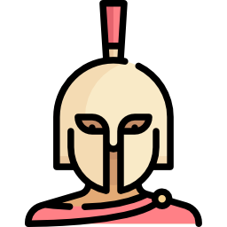

Odessey (working Greek themed title) is a simple migration simulation based on the gravity model, where each cell in the grid maintains a list of occupants. At every timestep, an individual has a probability of moving, with their destination determined by a weighted roulette wheel selection based on the normalised inverse square distance to other cells. Here is model in colab colab